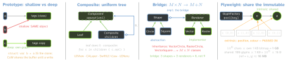

design · folio
In one line: Prototype (creational) — make a new object by copying a configured
instance. Composite — leaf and group behind one interface, a tree the client walks
uniformly. Bridge — split abstraction from implementation so two axes vary
independently (M×N →M+N). Flyweight — share immutable intrinsic
state, pass extrinsic state in. In Swift, value types + CoW are Prototype, and an
enum holding [Self] is Composite.
Download PDF Print view LaTeX source


Prototype (creational) GoF: “specify the kinds of objects to create using a prototypical instance, and create new objects by copying this prototype”. Use when construction is expensive, configured at runtime, or the type is hidden behind a protocol (“another like this”). Roles: Prototype (clone) · ConcretePrototype · Client; optional prototype registry (key → prototype).
Shallow = new top object, shared referenced objects; deep = the whole graph copied.
Foundation: NSCopying.copy(with:) (zone ignored) · mutableCopy(). Foundation copies are SHALLOW; copy() of an immutable NSArray may return the same instance. Deeper: NSArray(array:copyItems: true) (one level), NSKeyedArchiver or Codable encode→decode (whole graph).
Swift: struct/enum copy on assignment; Array/Dictionary/Set/String are copy-on-write (custom: isKnownUniquelyReferenced). Prototype dissolves into value semantics; write clone() only for class graphs.
vs Factory: builds from scratch by choosing a type; Prototype copies a configured instance.
Composite (structural) GoF: “compose objects into tree structures to represent part-whole hierarchies; lets clients treat individual objects and compositions uniformly”. Roles: Component · Leaf · Composite (holds [Component], implements operation by recursing) · Client.
iOS: UIView/CALayer trees; SwiftUI View (Text leaf, VStack container, both View); UIMenu(children:) of UIMenuElement (UIAction leaves + nested UIMenu); file systems.
Where do add/remove go? — transparency vs safety. On Component = transparent: uniform, but a leaf must no-op/throw (LSP smell); GoF favours it, and UIKit does it (any UIView accepts subviews). On Composite only = safe: type-checked, but clients downcast.
Swift: enum Node { case file(Int), folder([Node]) } + an exhaustive switch — no downcast, no no-op.
vs Decorator: one child, adds behaviour vs many children, aggregates.
// Composite: the enum IS the pattern
enum Node { case file(bytes: Int), folder([Node]) }
func size(_ n: Node) -> Int { switch n {
case .file(let b): b
case .folder(let kids): kids.map(size).reduce(0, +) } }
// Flyweight: shared immutable glyphs, extrinsic x,y
final class Glyph { let bitmap: [UInt8] = [] } // expensive
final class GlyphFactory { // lock/actor if shared
private var pool: [Character: Glyph] = [:]
func glyph(_ c: Character) -> Glyph {
if let g = pool[c] { return g }
let g = Glyph(); pool[c] = g; return g } }
struct Char { let glyph: Glyph; let x, y: Float }Bridge (structural) GoF: “decouple an abstraction from its implementation so that the two can vary independently”. Roles: Abstraction (holds impl) · RefinedAbstraction · Implementor (primitive ops) · ConcreteImplementor. The abstraction’s high-level ops are built from the implementor’s primitives.
Use when there are two independent axes: notification kind × channel (push/email/SMS), shape × renderer, player UI × playback engine. Swift: a protocol-typed stored property, or generic Shape<R: Renderer> (a static bridge, specialised).
vs Adapter: Bridge is designed UP FRONT so both sides can grow; Adapter is RETROFITTED to make an existing interface fit (GoF’s own distinction).
vs Strategy: same shape (holds a protocol). Strategy = one algorithm the client swaps (behavioural); Bridge = a whole implementation platform, and both sides are hierarchies.
Flyweight (structural) GoF: “use sharing to support large numbers of fine-grained objects efficiently”.
Intrinsic = stored in the flyweight, context-free, immutable, shared (glyph shape, tree mesh, icon). Extrinsic = per use, kept by the client and passed in (position, colour). A FlyweightFactory caches by key — clients never init one.
iOS: UIImage(named:) returns from a system cache (UIImage(contentsOfFile:) does not cache); icon/tile/glyph caches; string interning.
Cell reuse is an object POOL, not textbook Flyweight: pool = exclusive checkout of mutable objects; flyweight = simultaneous sharing of immutable ones.
vs Singleton: many shared instances, keyed. Cost: extrinsic state threads through every call; the factory must be thread-safe (NSCache is, a Dictionary is not → actor/lock).
Traps
NSArray.copy()is shallow; a class in a struct stays shared.- Composite’s real decision is transparency vs safety, not “a tree”.
- Bridge ≠ Adapter (up front vs retrofit) ≠ Strategy (2 hierarchies).
- Flyweight shared state must be immutable — else a race.
Remember Prototype copies · Composite nests · Bridge splits two axes · Flyweight shares the immutable.